Pemetaan Perjalanan
Wizard empat langkah untuk menyusun segmen dari titik awal sampai tujuan, plus peta skematis dan daftar yang setara.

Platform koordinasi perjalanan akses · Prototipe
LintasAkses menghubungkan pengguna, pengelola destinasi, penyedia transportasi, dan berbagai mitra untuk mengidentifikasi serta mengatasi hambatan aksesibilitas dalam satu perjalanan yang utuh.
Wilayah demo Kawasan Puspa bersifat fiktif. Semua angka dan nama pada halaman ini adalah data simulasi.
Segmen 3 (penyeberangan) belum punya ramp kerb. Seluruh perjalanan tertahan.
Pelancong, operator destinasi, penyedia transportasi, hotel dan akomodasi, pengelola infrastruktur publik, koordinator proyek, dan verifikator lapangan.
01 Masalahnya
Sebuah museum boleh punya toilet ramah kursi roda. Tetapi bila penyeberangan menuju pintunya tidak punya ramp kerb, perjalanan tetap berhenti di sana. Coba sendiri:
Perjalanan terhenti di segmen 3. Empat segmen lain aksesibel, tetapi tidak satu pun berguna bila pengguna tidak bisa menyeberang.
Ilustrasi konsep. Dalam platform, status “selesai” baru dicatat setelah diverifikasi pihak independen dan diuji oleh pengguna dengan kebutuhan akses yang sesuai.
02 Cara kerja
Pengguna membuat perjalanan, memecahnya menjadi segmen, dan memilih kebutuhan akses tanpa perlu menyebut diagnosis.
Kondisi akses yang belum terpenuhi dicatat per segmen, lengkap dengan bukti, dampak, dan tingkat prioritas.
Hambatan lintas lokasi dikelompokkan menjadi satu paket perbaikan. Tiap mitra hanya menerima tugas yang menjadi tanggung jawabnya.
Verifikator independen memeriksa di lapangan, lalu pengguna sungguhan menguji perjalanan. Baru setelah itu dihitung sebagai berhasil.
03 Platform
Setiap peran punya dasbor, menu, dan izin sendiri. Informasi privat satu organisasi tidak pernah terlihat oleh organisasi lain tanpa izin.
04 Fitur utama
Wizard empat langkah untuk menyusun segmen dari titik awal sampai tujuan, plus peta skematis dan daftar yang setara.
Laporkan hambatan dengan bukti, dampak, dan pilihan visibilitas. Setiap laporan mendapat nomor referensi dan bisa dilacak.
Kelompokkan beberapa hambatan dari segmen berbeda, tetapkan tujuan, jadwal, mitra penanggung jawab, dan anggaran ilustratif.
Mitra dapat menerima, menolak dengan alasan, atau mengusulkan alternatif. Semua tercatat pada utas aktivitas bersama.
Daftar periksa mobilitas, visual, pendengaran, kognitif, dan sensorik. Hasil menyimpan tanggal, ruang lingkup, dan bukti.
Aktivitas, keluaran, dan hasil dipisahkan. Metode hitung terbuka, dan data verifikasi lama ditandai kedaluwarsa.
05 Mengapa berbeda
Metrik utamaRamp terpasang
Metrik utamaPerjalanan layak & teruji
06 Dampak
Seluruh angka di bagian ini adalah data simulasi dari wilayah demo fiktif, bukan hasil dunia nyata.
Memasang fasilitas adalah keluaran. Hanya perjalanan yang lolos verifikasi segmen kritis dan diuji pengguna yang dihitung sebagai hasil. Satu uji berhasil tidak menjamin aksesibilitas untuk semua orang. Lihat dasbor dampak & metodologi.
07 Prinsip yang tidak ditawar
Verifikasi LintasAkses bersifat independen dan internal. Kami tidak menyebutnya sertifikasi pemerintah kecuali ada proses berwenang yang sungguh berjalan.
Perjalanan “berhasil diuji” hanya untuk kebutuhan akses dan pengguna yang terlibat. Ruang lingkup selalu dicantumkan.
Biaya layanan tidak boleh menyembunyikan laporan negatif atau mengubah status aksesibilitas. Setiap keputusan tercatat di log audit.
Tidak ada kewajiban menyebut diagnosis medis. Pelapor memilih visibilitas laporan: publik tanpa identitas, bersama mitra, atau privat.
08 Model bisnis
Informasi akses inti untuk pelancong tetap tersedia tanpa biaya. Pendapatan datang dari pihak yang mengoordinasikan dan membuktikan perbaikan.
09 Peta jalan (rencana indikatif)
Alur lengkap lima peran dengan data simulasi. Anda di sini
Satu koridor nyata bersama mitra dan verifikator.
Banyak koridor, integrasi peta sungguhan bila konfigurasi tersedia.
Pustaka praktik terbaik dan pelaporan dampak lintas konsorsium.
10 Tentang kami
Setiap orang dapat merencanakan dan menempuh perjalanan dengan kebutuhan akses mereka terpenuhi dari awal sampai akhir.
Transparan soal batas klaim. Hormat pada keragaman kebutuhan. Berorientasi hasil, bukan pencitraan.
11 Untuk mitra
Operator wisata, penyedia transportasi, pengelola infrastruktur publik, hotel, dan organisasi lain dapat bergabung dalam satu paket perbaikan, menerima tugas yang relevan, dan melihat bukti hasil.